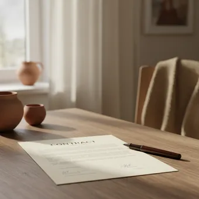

deutschoderwas · Sprechclub · Woche 10 · Strang A · Teil 1 · Montag, 16. November
Handy, Internet und Vertrag: Tarif, Laufzeit, Datenvolumen
Ein deutscher Handyvertrag ist kein Kauf, sondern ein kleines Gesetz: Es gibt einen Anfang, ein Ende, eine Frist und eine Zahl, die jeden Monat abgebucht wird. Wer die vier Wörter Laufzeit, Kündigungsfrist, Grundgebühr und Datenvolumen versteht, zahlt Jahr für Jahr weniger als jemand, der sie nicht kennt. Heute sammeln wir die Wörter und die Zeitangaben — am Mittwoch kündigen und melden wir Störungen.
Gleiches Thema, andere Sätze. Wechsle jederzeit — probier ruhig beide Seiten aus.
Erst mal ankommen
Zwei Runden. Erst reihum, dann zu zweit. Ein Satz genügt.
Runde 1 · reihum, ein Satz pro Person
Was zahlst du im Monat für dein Handy?
Hast du einen Vertrag oder eine Prepaid-Karte?
Wie lange hast du deinen Anbieter schon?
Hast du schon einmal etwas unterschrieben, das du nicht ganz verstanden hast?
Warum sind Verträge in Deutschland so lang — und lesen sie trotzdem alle nicht?
Was würdest du jemandem raten, der gerade neu hier ist?
🔑 Die vier Zahlen, die zählen:Wie viel im Monat? Wie lange läuft der Vertrag? Bis wann muss ich kündigen? Wie viel Datenvolumen? Wer diese vier Fragen stellt, bevor er unterschreibt, spart im Jahr oft über hundert Euro.
Runde 2 · zu zweit, fragt euch gegenseitig
Seit wann wohnst du in deiner Wohnung?
Wie lange dauert dein Deutschkurs?
Ab wann hast du heute Zeit?
Was ist der Unterschied zwischen seit und vor?
Warum sagt man für zwei Jahre, aber seit zwei Jahren?
Welche Zeitangabe verwechselst du am häufigsten?
💡 Der schnellste Merksatz:seit und ab nehmen den Dativ (seit zwei Jahren, ab dem 1.). für und pro nehmen den Akkusativ (für einen Monat, pro Monat). Und bis steht fast immer mit zum oder zur.
🆘 Wie fange ich an?
Bei mir war das so: …Ich habe einmal …Ich glaube, das ist …
Bei mir war das so: …Ehrlich gesagt habe ich das noch nie …Mir fällt spontan ein Fall ein, in dem …
Vier Situationen — zwei Runden
1Runde 1: Lest den Dialog zu zweit laut.
2Runde 2: Klappt die Zeilen zu und sprecht frei — nur die Stichwörter bleiben.
Dialog 1 · „Im Handyladen“
A will einen neuen Vertrag, B verkauft. A stellt die vier Fragen, bevor irgendetwas unterschrieben wird.
A
Ich such einen neuen Tarif. Draußen stehen zwölf Euro — stimmt das?
B
Fast. Die zwölf Euro gelten sechs Monate. Danach sind es 24,99.
🗣️ für die ersten sechs Monate (Dauer, Akkusativ) und ab dem siebten (Anfang, Dativ). Zwei Zeitangaben, zwei Fälle — im selben Satz.tippen = Hilfe zeigen
A
Gut zu wissen. Und wie lange läuft der Vertrag insgesamt?
B
24 Monate ab Freischaltung. Die Kündigungsfrist beträgt einen Monat zum Vertragsende.
🗣️ Die Frist beträgt — das offizielle Verb für Zahlen. Und zum Vertragsende heißt: Die Frist zählt vom Ende her, nicht von heute.tippen = Hilfe zeigen
A
Und wie viel Datenvolumen ist dabei? Was passiert, wenn es aufgebraucht ist?
B
Zwanzig Gigabyte. Danach wird es langsamer, kostet aber nichts extra.
🗣️ Die Frage am Ende ist der Moment, in dem viele Ja sagen. Genau hier kommt Baustein 4: Ich möchte es mir überlegen.tippen = Hilfe zeigen
Dialog 2 · „Der Anruf des Anbieters“
B ruft an und bietet A eine Vertragsverlängerung an. A lässt sich nicht drängen und will alles schriftlich.
A
Ja, hallo? … Ach so, wegen der Verlängerung. Ich höre.
B
Sie sind ja fast zwei Jahre bei uns. Wir hätten da ein Angebot.
🗣️ seit fast zwei Jahren + Präsens — es dauert noch an. Und für denselben Preis mit Akkusativ.tippen = Hilfe zeigen
A
Klingt gut. Und wie lange wäre ich dann wieder gebunden?
B
24 Monate ab dem nächsten Ersten. Das Angebot gilt allerdings nur bis heute Abend.
🗣️ Nur bis heute Abend ist fast immer Druck, kein Fakt. Ein gutes Angebot gilt auch morgen noch.tippen = Hilfe zeigen
A
Schicken Sie es mir bitte per Mail. Am Telefon sag ich nie zu.
B
Selbstverständlich. Sie bekommen die Bestätigung in den nächsten zehn Minuten.
🗣️ Der wichtigste Satz der ganzen Stunde: Schicken Sie es mir bitte schriftlich. Er beendet jeden Druck — höflich und endgültig.tippen = Hilfe zeigen
Dialog 3 · „Der Vertrag beim Umzug“
A zieht um und braucht Internet in der neuen Wohnung. B erklärt, wie lange das dauert — und was das für die Zeit dazwischen heißt.
A
Ich ziehe zum 1. Dezember um. Kann ich den Anschluss mitnehmen?
B
Meistens ja. Melden Sie den Umzug aber vier Wochen vorher, sonst wird es eng.
🗣️ mindestens vier Wochen vorher — die Dauer im Akkusativ, ohne Präposition. Und vorher heißt: vor dem genannten Zeitpunkt.tippen = Hilfe zeigen
A
Und wann ist der Anschluss in der neuen Wohnung dann frei?
B
Meistens am Umzugstag. Wenn ein Techniker kommen muss, dauert es länger.
🗣️ bis zu drei Wochen — nicht dasselbe wie drei Wochen. Es ist die Obergrenze, nicht die Zusage.tippen = Hilfe zeigen
A
Drei Wochen ohne Internet? Das wäre schwierig. Gibt es da was?
B
Wir schicken Ihnen einen mobilen Router. Der erste Monat ist frei.
🗣️ für die Übergangszeit und für den ersten Monat — beide mit Akkusativ. Und Übergangszeit ist genau das Wort, nach dem du fragen solltest.tippen = Hilfe zeigen
Dialog 4 · „Rat unter Freunden“
A hat gerade unterschrieben und erzählt davon. B kennt die Fallen und fragt genau nach.
A
Ich habe endlich einen neuen Vertrag. Nur zwölf Euro im Monat, richtig günstig.
B
Glückwunsch! Und gelten die zwölf Euro dauerhaft oder nur am Anfang?
🗣️ Die eine Frage, die fast immer den Unterschied macht — für die ganze Laufzeit gegen für die ersten Monate.tippen = Hilfe zeigen
A
Hm. Das habe ich nicht gefragt. Im Laden hieß es einfach zwölf Euro.
B
Guck mal in die Bestätigung. Im Laden gibt es leider kein Widerrufsrecht.
🗣️ Ein echter Unterschied im deutschen Recht: 14 Tage Widerruf gibt es online und am Telefon — im Laden nicht.tippen = Hilfe zeigen
A
Und wenn der Preis wirklich steigt? Kann ich dann raus?
B
Wenn der Preis steigt, ja. Dann darfst du sofort raus.
🗣️ während der Laufzeit — Genitiv, wie in Woche 9. Und das Sonderkündigungsrecht bei Preiserhöhung ist ein Recht, das viele nicht kennen.tippen = Hilfe zeigen
🎭 Und jetzt ihr: Spielt Dialog 1 mit einem echten Angebot, das ihr kennt. Regel für A: mindestens vier Fragen, jede mit einer Zeitangabe. Regel für B: alles verraten, aber erst, wenn gefragt wird.
Sätze, die sitzen müssen
Sag jeden einmal laut.
1 · ❓ Nach dem Preis fragen
Was kostet das im Monat?
Gibt es eine Anschlussgebühr?
Ist das der Preis für immer?
Was kommt noch dazu?
2 · 📅 Nach der Zeit fragen
Wie lange läuft der Vertrag?
Ab wann gilt er?
Bis wann muss ich kündigen?
Kann ich monatlich kündigen?
3 · 📶 Nach der Leistung fragen
Wie viel Datenvolumen ist dabei?
Gilt das auch im Ausland?
Was passiert, wenn es alle ist?
Ist Telefonieren inklusive?
4 · ✋ Zeit gewinnen
Ich möchte es mir überlegen.
Kann ich das mitnehmen?
Schicken Sie es mir bitte per E-Mail.
Ich melde mich morgen.
1 · ❓ Nach den echten Kosten fragen
Wie hoch sind die Gesamtkosten über die Laufzeit?
Ab wann greift der reguläre Preis?
Sind das Netto- oder Endpreise?
Welche Posten kommen einmalig dazu?
2 · 📅 Fristen klären
Verlängert sich der Vertrag automatisch?
Wann genau beginnt die Kündigungsfrist?
Gilt das Widerrufsrecht auch hier im Laden?
Kann ich die Frist irgendwo nachlesen?
3 · 📶 Bedingungen prüfen
Wird nach dem Verbrauch gedrosselt oder abgerechnet?
Gilt der Tarif im EU-Ausland unverändert?
Ist ein Wechsel innerhalb der Laufzeit möglich?
Was passiert bei einem Umzug?
4 · ✋ Höflich Abstand nehmen
Ich unterschreibe heute grundsätzlich nichts.
Ich lasse mir das gern schriftlich geben.
Ich vergleiche das noch mit zwei anderen Angeboten.
Danke, das ist mir zu lang gebunden.
✅ Und jetzt zu zweit: Deckt die Sätze zu. Einer nennt den Schritt, der andere sagt den Satz aus dem Kopf. Danach tauschen.
⏱️ Die 90-Sekunden-Challenge
Neunzig Sekunden über deinen eigenen Vertrag: Seit wann hast du ihn, was kostet er, wie lange läuft er, bis wann kannst du kündigen? Mindestens fünf Zeitangaben.
Dein Wort

der Vertrag
1:30
Vier Sätze, dann trägt dich die Zeit:
Seit wann:Ich habe den Vertrag seit zwei Jahren.
Wie viel:Ich zahle zwölf Euro pro Monat, ab dem siebten Monat mehr.
Wie lange:Er läuft für 24 Monate.
Bis wann:Ich muss bis zum 30. September kündigen.
Und wenn du deine eigenen Zahlen nicht kennst: umso besser. Sag genau das — Ich weiß nicht, seit wann ich den Vertrag habe, und ich habe die Kündigungsfrist nie nachgelesen. Das ist ein ehrlicher, vollständiger deutscher Satz und gleichzeitig deine Hausaufgabe.
⏱️ Spielregel: In jeder Runde müssen drei verschiedene Zeitwörter vorkommen — seit, ab, für oder bis. Wer seit zwei Jahre ohne Dativ sagt, fängt noch einmal an.
🎭 Drei Situationen zu zweit
1Einer fragt, einer verkauft oder erklärt.
2Danach tauschen — und beim zweiten Mal ohne die Sätze unten.
!Regel: In jeder Runde mindestens drei Zeitangaben.
1Im Laden, ohne zu unterschreiben
A
will einen Tarif und stellt alle Fragen.
B
verkauft und möchte, dass A heute unterschreibt. A geht am Ende ohne Unterschrift raus — aber freundlich.
Sätze, die dir helfen
Was kostet das im Monat?Wie lange läuft der Vertrag?Wie viel Datenvolumen ist dabei?Ich möchte es mir überlegen.
Gilt der Preis für die gesamte Laufzeit oder nur für die ersten Monate?Ab wann würde der Vertrag laufen, und bis wann müsste ich kündigen?Was passiert, wenn das Volumen aufgebraucht ist — wird gedrosselt oder abgerechnet?Ich unterschreibe heute nichts. Geben Sie mir das Angebot bitte schriftlich mit
🎯 Geschafft, wennA hat mindestens drei Zeitangaben benutzt (ab, für, bis) und ist ohne Unterschrift gegangen, ohne unhöflich zu werden. B hat alles beantwortet, aber nur, wenn gefragt wurde.
🆘 Und wenn B nein sagt?
Das verstehe ich. Aber …Kann ich bitte fragen: …?Was kann ich jetzt machen?
Das verstehe ich — trotzdem bleibe ich dabei: …Darf ich kurz nachfragen: …?Wer kann das denn entscheiden?
2Der Anruf mit dem Sonderangebot
A
bleibt freundlich und verlangt alles schriftlich.
B
ruft an und will A zu einer Verlängerung überreden — mit Zeitdruck.
Sätze, die dir helfen
Wie lange wäre ich gebunden?Was kostet es danach?Bis wann gilt das Angebot?Schicken Sie es mir bitte per E-Mail.
Seit wann bin ich eigentlich bei Ihnen? Ich glaube, seit gut zwei JahrenAb wann würde der neue Tarif gelten, und für wie lange wäre ich dann gebunden?Am Telefon sage ich grundsätzlich nicht zu — schicken Sie es mir bitte schriftlichWenn das Angebot nur bis heute Abend gilt, brauche ich es gar nicht
🎯 Geschafft, wennA hat kein einziges Mal am Telefon zugestimmt und mindestens einmal seit mit Präsens benutzt. B hat Zeitdruck aufgebaut, ohne unhöflich zu sein.
🆘 Und wenn B nein sagt?
Das verstehe ich. Aber …Kann ich bitte fragen: …?Was kann ich jetzt machen?
Das verstehe ich — trotzdem bleibe ich dabei: …Darf ich kurz nachfragen: …?Wer kann das denn entscheiden?
3Der Freund fragt um Rat
A
hat gerade unterschrieben und ist stolz.
B
stellt die Fragen, die A vorher nicht gestellt hat — freundlich, aber gründlich.
Sätze, die dir helfen
Ich habe einen neuen Vertrag.Er kostet zwölf Euro im Monat.Ich weiß nicht, wie lange er läuft.Was soll ich jetzt machen?
Seit wann hast du ihn, und ab wann läuft er offiziell?Steht in der Bestätigung, für wie lange der Einstiegspreis gilt?Schreib dir das Kündigungsdatum sofort in den Kalender — sonst verlängert er sichWenn du online abgeschlossen hast, hast du noch 14 Tage Widerrufsrecht
🎯 Geschafft, wennB hat mindestens vier verschiedene Zeitangaben benutzt und A einen konkreten nächsten Schritt gegeben — nicht nur erklärt, was falsch gelaufen ist.
🆘 Und wenn B nein sagt?
Das verstehe ich. Aber …Kann ich bitte fragen: …?Was kann ich jetzt machen?
Das verstehe ich — trotzdem bleibe ich dabei: …Darf ich kurz nachfragen: …?Wer kann das denn entscheiden?
🎴 Sprechkarten
Zieh eine Karte. Vier Sätze am Stück.
Deine Aufgabe
Tippe auf den Knopf.
Jetzt ihr
Drei kleine Übungen. Jeder kommt dran.
Dein Satz
Tippe auf den Knopf.
1
Satz ziehen und weiterreden
Zieh einen Satz, sag ihn laut — und häng sofort einen zweiten Satz an, der danach kommen würde.
2
Die Kette
Reihum sagt jeder einen Satz von oben. Kein Satz darf zweimal kommen. Wer nicht weiterweiß, sagt Ich weiß gerade keinen mehr — auch das ist ein Satz.
3
Ohne Hilfe
Klappt alles zu und spielt Dialog 1 noch einmal — frei, mit euren eigenen Wörtern.
Zum Schluss
Ein Satz von jedem.
Welchen Satz von heute nimmst du mit — und wo brauchst du ihn?
🆘 Wie fange ich an?
Ich nehme mit: …Ich will den Satz „…“ benutzen.Neu war für mich: …
Ich nehme mit, dass …Den Satz „…“ will ich nächste Woche wirklich benutzen.Neu war für mich, dass …
📮 Deine Hausaufgabe bis Mittwoch
Vier kleine Aufgaben, zusammen etwa 25 Minuten. Am Mittwoch geht es weiter: kündigen, eine Störung melden und die Hotline überstehen.
💡 Warum das hilft: Diese Stunde ist die einzige, die dir direkt Geld spart. Wer die Kündigungsfrist im Kalender stehen hat und den Einstiegspreis vom regulären Preis unterscheidet, zahlt über die Jahre mehrere hundert Euro weniger — bei genau demselben Handy.
0 von 0 Aufgaben geschafft.
So sehen die zehn Sätze aus:
Ich wohne seit drei Jahren in Deutschland.
Ich lerne seit einem Jahr Deutsch.
Abdem 1. Januar habe ich einen neuen Kurs.
Ich bleibe für einen Monat bei meiner Schwester.
Ich muss bis zum 30. September kündigen.
Ein einziger Test genügt: Sag das Wort erst allein mit Artikel — ein Monat, der 1. Januar. Nach seit und ab wird daraus einem und dem. Nach für wird daraus einen und den.
Das sind die drei Stellen, auf die es ankommt:
Preiserhöhung: Steigt der Preis während der Laufzeit, darfst du sonderkündigen — meist innerhalb von vier Wochen nach der Ankündigung.
Automatische Verlängerung: Seit 2022 darf sich ein Vertrag nur noch monatlich verlängern, nicht mehr um ein ganzes Jahr.
Drosselung: Ist das Volumen aufgebraucht, wird die Geschwindigkeit reduziert. Zusätzliche Kosten dürfen nur entstehen, wenn du sie ausdrücklich bestellst.
Widerruf: 14 Tage bei Abschluss online oder am Telefon — im Laden gibt es dieses Recht nicht.
Rufnummernmitnahme: Beim Wechsel darfst du deine Nummer kostenlos mitnehmen.
Und ein Satz, den du dir merken solltest, weil er in Deutschland tatsächlich funktioniert: „Ich widerspreche der Preiserhöhung und mache von meinem Sonderkündigungsrecht Gebrauch.“ Wer ihn schriftlich schickt, bekommt fast immer ein besseres Angebot zurück.